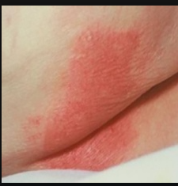
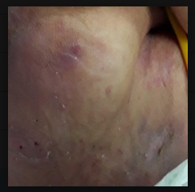
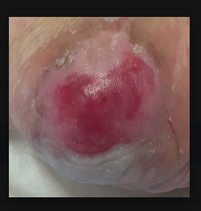
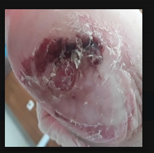
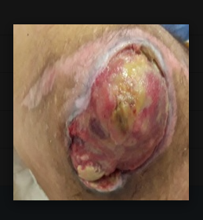
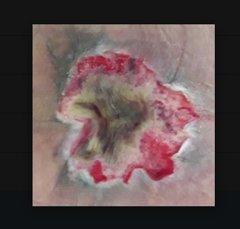
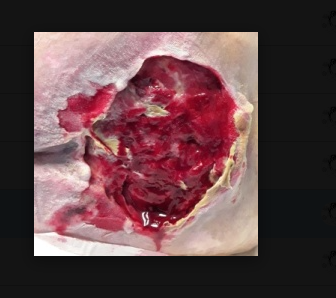
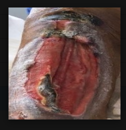
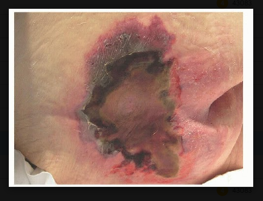
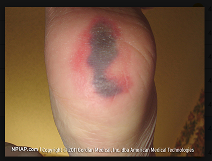

แผลกดทับ (Pressure Injury)
i
ให้ความรู้ทั่วไป ไม่ใช่การวินิจฉัยโรค
แผลกดทับคืออะไร
แผลกดทับคือผิวหนังและเนื้อเยื่อที่ถูกกดทับนานเกินไป จนเลือดไปเลี้ยงไม่พอ
ผิวหนังจึงเสียหายหรือกลายเป็นแผล สาเหตุเกิดจากแรงกดทับร่วมกับแรงเสียดสีหรือแรงเฉือน
โดยเฉพาะบริเวณที่มีปุ่มกระดูกอยู่ใกล้ผิวหนัง ซึ่งทำให้หลอดเลือดฝอยตีบตัน
เลือดไม่สามารถไหลเวียนเลี้ยงเนื้อเยื่อได้ ส่งผลให้เนื้อเยื่อขาดออกซิเจนและสารอาหาร
จนเซลล์ตายและเกิดเป็นแผลขึ้นในที่สุด
ผิวหนังยังไม่แตกก็นับว่าเป็นแผลกดทับได้ จึงใช้คำว่า "การบาดเจ็บ" (Injury)
ตามที่วงการแพทย์เปลี่ยนมาใช้ตั้งแต่ปี 2016
ใครเสี่ยงบ้าง
- ผู้ป่วยติดเตียง และผู้สูงอายุ
- ผู้ที่ขยับตัวเองไม่ได้ เช่น อัมพาต
- ผู้ที่ขาดสารอาหาร
- ผู้ที่กลั้นปัสสาวะหรืออุจจาระไม่ได้
- ผู้ที่ผิวบอบบางหรือชื้นจากเหงื่อ ไข้ หรือผ้าอ้อม
พบบ่อยตรงไหน
- ก้นกบและก้น
- สะโพก
- ส้นเท้าและข้อเท้า
- ข้อศอก
- ไหล่และหลัง
- ผิวใต้สายหรืออุปกรณ์ทางการแพทย์
สัญญาณเตือนแรกเริ่ม
- มีรอยแดงหรือรอยคล้ำ ที่ลดการกดทับแล้ว 30 นาทียังไม่ดีขึ้น
- ใช้นิ้วกดแล้วสีไม่จางลง
- ผิวแตก เป็นตุ่ม หรือลอก
- ผิวตรงนั้นเจ็บ อุ่น เย็น แข็ง หรือนุ่มกว่าผิวรอบๆ
- ผิวสีเข้มอาจเห็นสีแดงไม่ชัด ให้เทียบกับผิวบริเวณข้างเคียง
ระยะของแผลกดทับ
แบ่งเป็น 4 ระยะ ยิ่งระยะสูงยิ่งลึกและรุนแรง
ระยะที่ 1
- ผิวยังไม่เป็นแผล
- มีรอยแดงหรือรอยคล้ำที่กดแล้วไม่จาง
- ถ้าสีออกม่วงหรือแดงเข้มมาก ให้พยาบาลตรวจ เพราะอาจเป็นการบาดเจ็บชั้นลึก
ดูตัวอย่างภาพ (ภาพแผลจริง)


ตัวอย่างเท่านั้น ลักษณะจริงต่างกันตามตำแหน่งและสีผิว
ที่มาภาพ: [ใส่ที่มา]
ระยะที่ 2
- ผิวชั้นนอกหลุด เป็นแผลตื้น
- ก้นแผลสีชมพูหรือแดง ชื้น
- ยังไม่เห็นชั้นไขมัน
- อาจเป็นตุ่มน้ำใส
ดูตัวอย่างภาพ (ภาพแผลจริง)


ตัวอย่างเท่านั้น ลักษณะจริงต่างกันตามตำแหน่งและสีผิว
ที่มาภาพ: [ใส่ที่มา]
ระยะที่ 3
- แผลเปิดกว้างและลึกขึ้น
- มองเห็นชั้นไขมันใต้ผิวหนัง
- อาจเป็นหลุม
- ยังไม่ถึงกล้ามเนื้อ เอ็น หรือกระดูก
ดูตัวอย่างภาพ (ภาพแผลจริง)


ตัวอย่างเท่านั้น ลักษณะจริงต่างกันตามตำแหน่งและสีผิว
ที่มาภาพ: [ใส่ที่มา]
ระยะที่ 4
- แผลลึกมาก
- เห็นหรือคลำถึงกล้ามเนื้อ เอ็น หรือกระดูก
- มักมีเนื้อตายสีดำหรือเหลืองคลุม
- อาจมีโพรงลึกใต้ขอบแผล
- เสี่ยงติดเชื้อรุนแรง
ดูตัวอย่างภาพ (ภาพแผลจริง)


ตัวอย่างเท่านั้น ลักษณะจริงต่างกันตามตำแหน่งและสีผิว
ที่มาภาพ: [ใส่ที่มา]
ประเมินระยะไม่ได้
- มีเนื้อตายหรือสะเก็ดดำคลุมก้นแผล มองไม่เห็นความลึก
- ห้ามแกะหรือลอกเนื้อตายเอง
- ต้องให้แพทย์หรือพยาบาลประเมิน
ดูตัวอย่างภาพ (ภาพแผลจริง)


ตัวอย่างเท่านั้น ลักษณะจริงต่างกันตามตำแหน่งและสีผิว
ที่มาภาพ: [ใส่ที่มา]
ป้องกันได้อย่างไร
- พลิกตัวอย่างน้อยทุก 2 ชั่วโมง หรือถี่กว่านั้นตามที่พยาบาลแนะนำ
- ตะแคงเอียงประมาณ 30 องศา ไม่ตะแคงตั้งตรง และไม่ยกหัวเตียงสูงเกิน 30 องศา เว้นแต่แพทย์สั่ง
- ยกตัวผู้ป่วยทุกครั้งที่เปลี่ยนท่า ห้ามลากตัวไปบนที่นอน
- หนุนปุ่มกระดูกและน่อง ให้ส้นเท้าลอย ห้ามนอนทับจุดที่มีรอยแดง
- ใช้เบาะโฟมหรือเจล ช่วยกระจายแรงกดทับ ห้ามใช้ห่วงยางหรือเบาะโดนัท
- ตรวจผิวหนังทุกวัน ทุกครั้งที่พลิกตัว และใต้สายหรืออุปกรณ์ รักษาความสะอาดและแห้ง ห้ามนวดหรือถูแรงๆ
- ให้อาหารที่มีโปรตีนและสารอาหารครบถ้วน เพื่อบำรุงผิวหนัง
ควรพบแพทย์เมื่อไหร่
ควรไปพบแพทย์หรือพยาบาล เมื่อพบอาการต่อไปนี้
- ผิวเริ่มเป็นแผลเปิดหรือเป็นตุ่ม
- รอยแดงไม่ดีขึ้นหลังลดการกดทับแล้ว
- แผลลึกขึ้นหรือกว้างขึ้น
- มีเนื้อตายสีดำหรือเหลือง
- แผลมีหนอง มีกลิ่นเหม็น หรือบวมแดงร้อนรอบแผล
- ผู้ป่วยมีไข้ หรือปวดแผลมากขึ้น
ถ้าอาการรุนแรงหรือฉุกเฉิน โทร 1669
i
ข้อควรทราบ
- เว็บนี้เป็นเครื่องมือช่วยคัดกรองเบื้องต้นเท่านั้น
- ใช้กับแผลกดทับเท่านั้น ไม่ใช้กับแผลไฟไหม้ แผลผ่าตัด หรือแผลเบาหวาน
- AI แยกได้เฉพาะ ระยะ 1-4 ผิวปกติ และประเมินระยะไม่ได้
- AI ไม่ได้แยกการบาดเจ็บชั้นลึก แผลจากอุปกรณ์ และแผลที่เยื่อบุ
- ผลจาก AI ไม่ใช่การวินิจฉัยของแพทย์ ไม่ใช้แทนการตรวจโดยบุคลากรทางการแพทย์
- ถ้ากังวลหรือแผลดูแย่ลง ให้ปรึกษาแพทย์หรือพยาบาล
แหล่งอ้างอิง
- EPUAP/NPIAP/PPPIA (2025). Prevention and Treatment of Pressure Ulcers/Injuries: Clinical Practice Guideline. The International Guideline (ฉบับที่ 4)
- NPUAP (2016). Revised Pressure Injury Staging System
- คณะแพทยศาสตร์ มหาวิทยาลัยสงขลานครินทร์ (2565)
- พรเทพ สิริมหาไชยกุล และ สืบสิน จิรวรพัฒน์ (2564)
- ภิญโญ อุทธิยา (2566)